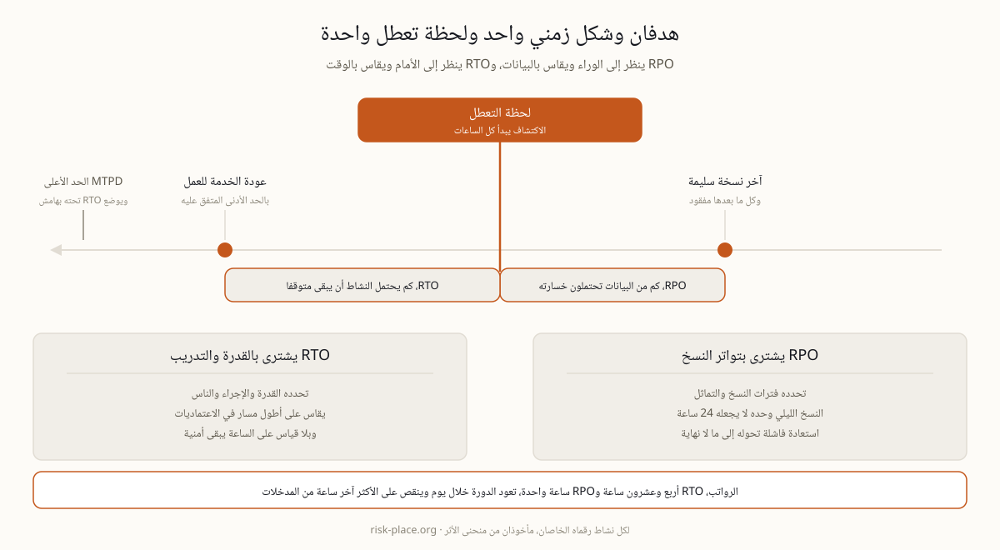

هدف زمن التعافي، أو RTO، هو أقصى مدة يجوز أن يبقى فيها نشاط متوقفا قبل أن يصبح الضرر غير مقبول، وهو يجيب عن سؤال واحد، كم من الوقت أمامنا قبل أن يعود هذا للعمل. وهدف نقطة الاستعادة، أو RPO، هو أقصى كمية من البيانات، مقيسة بالزمن لا بالحجم، تستطيعون تحمل فقدانها، وهو يجيب عن سؤال آخر تماما، كم يجوز أن تكون آخر نسخة سليمة قديمة. خذوا دورة رواتب لها RTO مقداره 24 ساعة وRPO مقداره ساعة واحدة، والمعنى أن الرواتب يجب أن تعمل من جديد خلال يوم، وأنها حين تعمل قد ينقصها على الأكثر آخر ساعة من المدخلات. وعدان مختلفان يقودان إلى ترتيبات مختلفة، فالأول يشترى بقدرة تعاف وإجراءات وأشخاص، والثاني يشترى بتواتر النسخ والتماثل. وهذه الصفحة مخصصة لهذين الرقمين وحدهما وبلغة يفهمها غير المختص، أما المنظومة الكاملة من أربعة أرقام مع أقصى فترة تعطل مقبولة والحد الأدنى لمستوى الخدمة، ومثال رقمي متكامل، فمكانها صفحة أهداف التعافي الأربعة.
ومصدر الخلط بين الرقمين أنهما يقاسان بالوحدة نفسها، بالساعات، فيظن كثيرون أنهما وجهان لشيء واحد. الفارق يظهر لحظة السؤال عن الثمن. لتقصير RTO تشترون قدرة احتياطية وإجراءات مكتوبة وأشخاصا يعرفون أدوارهم ويتدربون عليها، ولتقصير RPO تشترون تواترا أعلى في النسخ أو تماثلا لحظيا بين موقعين. وقد تحتاج شركة إلى الأول دون الثاني، مثل مصنع يحتمل فقد ساعة من بيانات القياس ولا يحتمل توقف الخط، وقد تحتاج أخرى إلى العكس تماما، مثل جهة تحتفظ بسجل معاملات لا يجوز أن ينقص منه شيء ولو تأخرت الخدمة نصف يوم. ومن يخلط بين الرقمين ينفق على الجانب الخاطئ من المشكلة.

الجدول التالي يعطي مدى شائعا في السوق لا وصفة، والغرض منه أن تعرفوا ما الذي يحدد الرقم في كل حالة، لأن العامل الحاكم كثيرا ما لا يكون تقنيا أصلا.
| مثال على النشاط | RTO المعتاد | RPO المعتاد | ما الذي يحدد السقف |
|---|---|---|---|
| المبيعات والمدفوعات عبر الإنترنت | من دقائق إلى 4 ساعات | قريب من الصفر | الإيراد في الساعة، وكلفة التماثل ترتفع بحدة كلما اقتربت من الصفر |
| التحكم بخط الإنتاج | من ساعتين إلى 24 ساعة | آخر وردية | إجراءات إعادة التشغيل وفحوص السلامة، لا التقنية وحدها |
| الفوترة والرواتب | من 24 إلى 72 ساعة | من ساعة إلى 24 ساعة | التواريخ التعاقدية وثقة الموظفين |
| التقارير التنظيمية | قبل الموعد النهائي | آخر إفادة مقدمة | التقويم لا التقنية |
وعلامة الهدف الوهمي واحدة لا تخطئ، أنه لم يثبت عمليا قط. الهدف الذي لم ينج من قياس على الساعة أمنية لا التزام، والمدققون يعاملونه على هذا الأساس، والحوادث تفعل الشيء نفسه بلا مجاملة.
التسلسل الصحيح ثلاث خطوات لا واحدة. يقترح أصحاب الأنشطة الرقم انطلاقا من منحنى الأثر، وتؤكد التقنية إن كان قابلا للتحقيق بالترتيبات الحالية، ثم تعتمد القيادة الفجوة المتبقية، لأن الهدف الذي لا نستطيع الوفاء به هو خطر مقبول باسم أحدهم، وقبول الخطر عمل قيادي لا عمل فني. وحين تتعذر إغلاق الفجوة هذا العام، فالمخرج ليس خفض الرقم على الورق بل تسجيله كما هو، الهدف المطلوب والقدرة الفعلية والفارق بينهما وتاريخ المراجعة واسم من قبل هذا الفارق. أما إعادة التحقق فتجري عند كل تحديث لتحليل أثر الأعمال، وبعد أي تغيير جوهري، وفي التمرين السنوي على أقل تقدير. ومعنى إعادة التحقق هنا القياس على الساعة في تمرين أو اختبار استعادة، لا إعادة التوقيع على الوثيقة نفسها بتاريخ جديد. ولاحظوا أن الرقمين يستقران في قسم التعافي من خطة الاستمرارية، وبنية ذلك القسم شرحناها في صفحة أقسام خطة الاستمرارية. وفي الإمارات يستخدم كل من NCEMA 7000 وISO 22301 هذا الترتيب الطبقي نفسه، إذ يوضع RTO تحت أقصى فترة تعطل مقبولة بهامش أمان، والمقارنة بين المعيارين في صفحة NCEMA 7000 وISO 22301.
اشتقاق أرقام التعافي من منحنى الأثر والدفاع عنها أمام القيادة هو جوهر الوحدة M1 من برنامج ERGP، أول شهادة في حوكمة المرونة متاحة بالكامل باللغة العربية وبالإنجليزية أيضا. ست وحدات وستة مخرجات عملية وشهادة قابلة للتحقق.
تعرفوا على برنامج ERGP